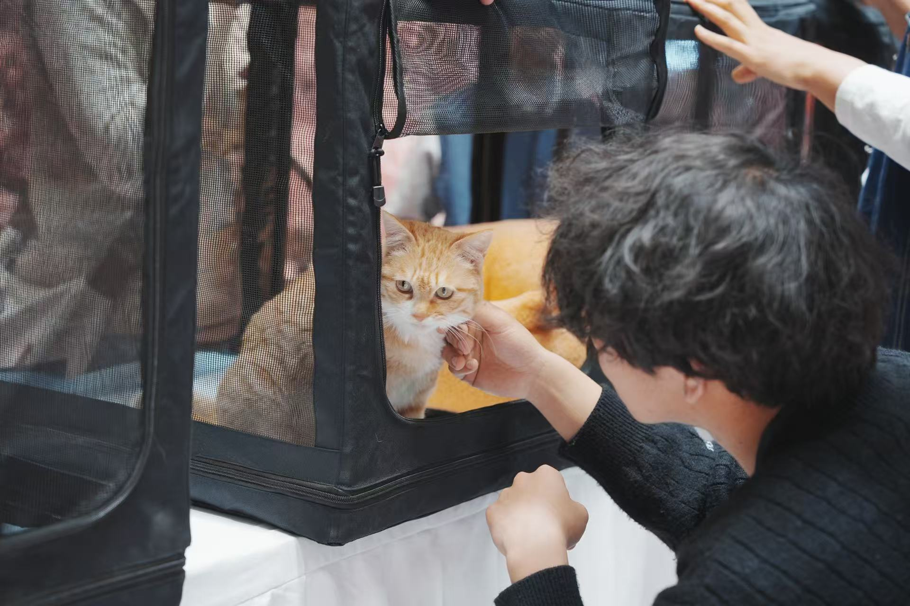
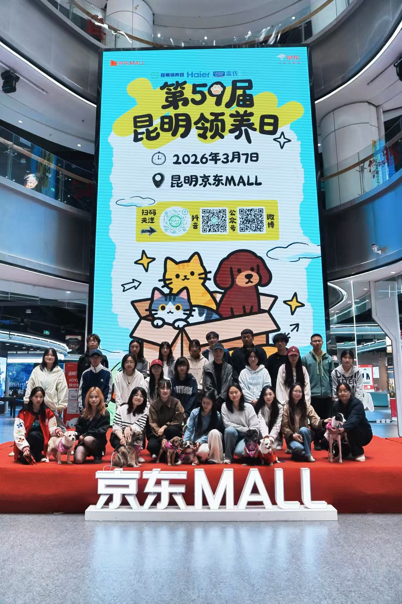

办公室
OFFICE
统筹社团日常行政，管理档案物资，协调各部门沟通，做好会议记录与通知传达。

志愿公益类 · 云南农业大学
SMALL ANIMAL LOVERS ASSOCIATION
尊重生命 · 守护小动物 · 科学领养
昆明领养日 · 流浪动物救助 · 养宠科普宣讲
了解我们ABOUT
尊重生命
守护每一个小生命
我们成立于校园关爱流浪动物的公益需求，以尊重生命、守护小动物、推广科学领养为宗旨。
本社团长期开展昆明领养日、流浪动物救助、养宠科普宣讲等公益活动。社团设有办公室、财务部、策划部等六大职能部门，成员规模庞大，分工清晰高效。
近年来，社团围绕动物保护公益主线不断推进品牌建设，形成以线下领养活动为核心、科普宣传为辅的公益特色。
未来，社团将持续深耕昆明领养日活动，普及文明养宠理念，搭建可靠领养渠道，凝聚更多爱心同学守护小动物。
DEPARTMENTS
六大部门协同，守护每一个小生命
OFFICE
统筹社团日常行政，管理档案物资，协调各部门沟通，做好会议记录与通知传达。
FINANCE
负责社团经费收支登记，管控活动预算，整理票据，定期公示财务明细。
PLANNING
构思各类社团活动方案，设计流程环节，完善活动策划书，把控活动创意。
ORGANIZATION
统筹活动人员安排，组织线下活动开展，管理社员考勤，落实团建工作。
PUBLICITY
制作海报推文、拍摄活动素材，运营社交平台，对外宣传社团风采。
EXTERNAL RELATIONS
对接校内组织与校外商家，洽谈赞助合作，搭建社团对外交流渠道。
MOMENTS
与小动物们的温暖时光
ACTIVITIES
领养日、科普宣讲与萌宠进校园

本社团成立于校园关爱流浪动物的公益需求，以尊重生命、守护小动物、推广科学领养为宗旨，长期开展昆明领养日、流浪动物救助、养宠科普宣讲等公益活动。社团设有办公室、财务部、策划部等六大职能部门，成员规模庞大，分工清晰高效。近年来，社团围绕动物保护公益主线不断推进品牌建设，形成以线下领养活动为核心、科普宣传为辅的公益特色。未来，社团将持续深耕昆明领养日活动，普及文明养宠理念，搭建可靠领养渠道，凝聚更多爱心同学守护小动物。
本次校园宣讲面向在校学生，科普流浪动物救助、科学养宠知识，剖析随意弃养的危害，倡导文明饲养、终身负责，引导同学们理性对待宠物，主动参与动物保护公益。

社团参与第59届昆明领养日公益活动，志愿者现场照料流浪猫狗，接待市民咨询，讲解领养流程与养宠责任，为流浪小动物匹配靠谱领养人，普及拒绝弃养的公益理念。

本次校园萌宠活动邀请温顺宠物入校，组织学生近距离互动体验，同步科普科学饲养、动物行为常识，引导学生树立尊重生命、理性养宠的观念，丰富校园公益文化。